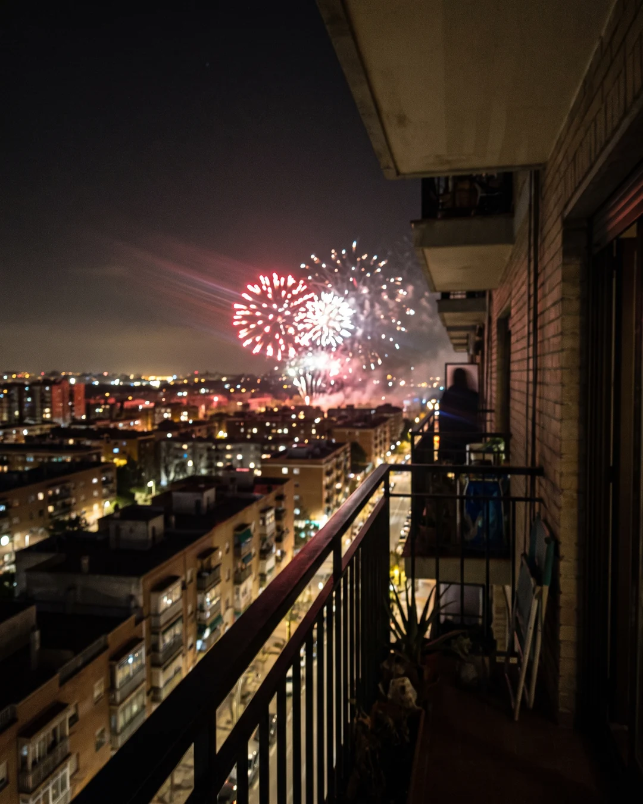
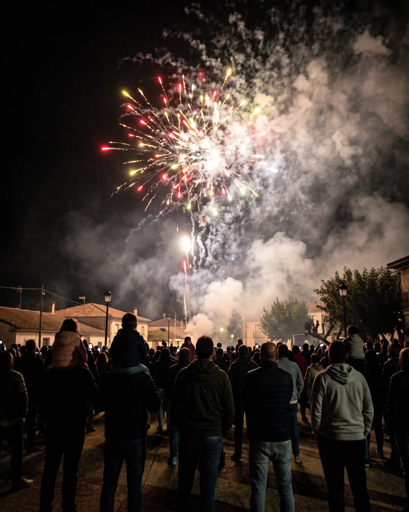
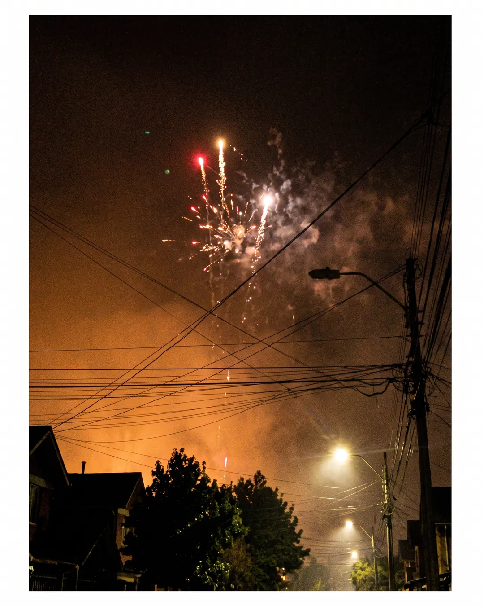

Caso n.º 1 · Fuegos artificiales
Imágenes
-

IA
La confesión del sospechoso
Fuegos artificiales sobre el mar, reflejados en el agua, desde la arena de una playa; foto oscura con mucho ruido.
-

IA
La confesión del sospechoso
Fuegos artificiales sobre una ciudad de noche vistos desde un balcón, con la barandilla y un trozo de edificio en primer plano; un poco movida.
-
REAL
Fotografía real
-

IA
La confesión del sospechoso
Fuegos artificiales en una fiesta de pueblo, con siluetas de gente de espaldas mirando al cielo y humo acumulado entre las explosiones.
-

IA
La confesión del sospechoso
Un castillo de fuegos artificiales recién empezado, con farolas y cables eléctricos cruzando la imagen y el cielo algo anaranjado por la contaminación lumínica.
¿Dato o Bulo?
-
DATO «El fuego artificial individual más grande de la historia pesó más de 1.000 kg.»
Pesó 1.268 kg y se lanzó en Colorado (EE. UU.) en febrero de 2020.
- Se lanzó en el Carnaval de Invierno de Steamboat Springs.
-
DATO «Los fuegos artificiales se crearon involuntariamente buscando la inmortalidad.»
La pólvora la descubrieron alquimistas chinos hace más de 1.000 años, hacia el siglo IX, buscando un elixir de la inmortalidad.
- Mezclaron carbón, azufre y salitre.
- Obtuvieron una mezcla explosiva.
-
BULO «En el mayor espectáculo de fuegos artificiales de la historia se lanzaron más de un millón de fuegos.»
El récord Guinness son 840.537 fuegos, lanzados en Washington D. C. el 4 de julio de 2026.
- Fue por el 250 aniversario de la independencia de EE. UU.
- Duró unos 40 minutos.
-
BULO «Los fuegos artificiales verdes deben su color al cobre.»
El verde se consigue con compuestos de bario, mientras que el cobre se usa para el azul.
- El azul es uno de los colores más difíciles de lograr.
-
DATO «Los fuegos artificiales pueden verse desde el espacio.»
Desde la Estación Espacial Internacional se han fotografiado fuegos artificiales sobre grandes ciudades.
- Desde allí se ven como destellos diminutos.
- A simple vista son muy difíciles de distinguir.